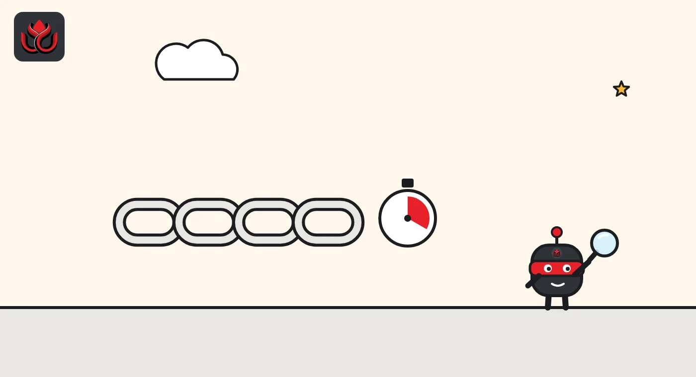
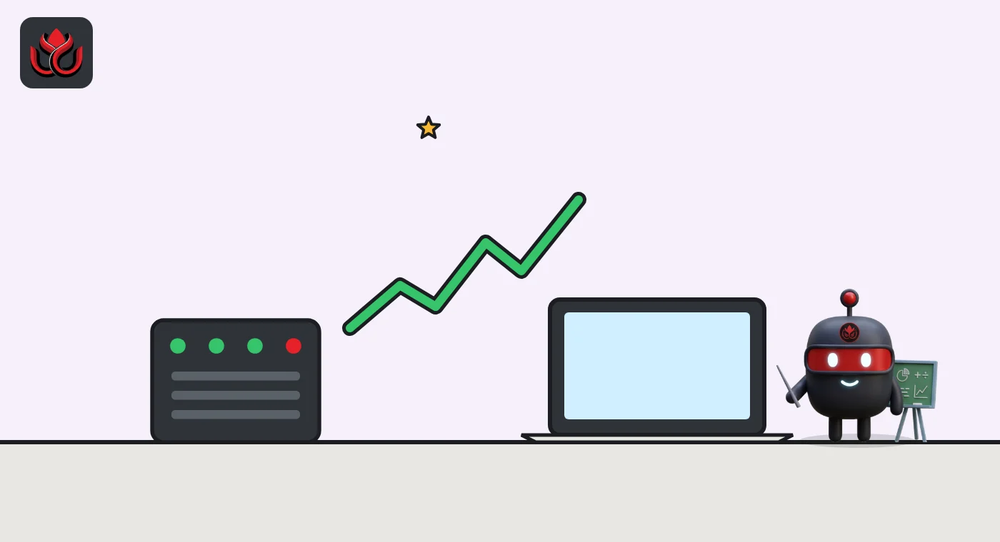

Bitcoin mining and hashrate explained: difficulty, hashprice and data sources
Bitcoin miners race to find a block hash below a target, and every 2,016 blocks (about two weeks) the network resets the difficulty so blocks keep coming about every 10 minutes. Hashrate, the total guessing power, cannot be measured directly; it is estimated from difficulty and block times.
Key points
- Mining means repeatedly hashing a block header until the result is at or below a target set by the network. The first miner to do it adds the block and collects the reward.
- Difficulty resets every 2,016 blocks so blocks average about 10 minutes. One reset can raise difficulty by up to 300% or cut it by up to 75%.
- Hashrate is an estimate based on difficulty and how fast blocks arrive, so trackers smooth it with 7-day or 30-day averages.
- Hashprice, a term coined by Luxor, shows what a unit of hashrate earns per day. It is the number miners watch most.
What is Bitcoin mining?
Bitcoin has no central server deciding which transactions are valid. Instead, miners compete to add the next block. To win, a miner must produce a hash of the block header (a short fingerprint made with the SHA-256 function) that does not exceed a certain value, the target. Bitcoin's developer guide explains that nodes only accept a new block if its hash meets the difficulty the protocol expects.
There is no shortcut. Miners change a small field in the header and hash it again, over and over, until one result happens to fall below the target. The work is costly to do and cheap for everyone else to check, which is why it is called proof of work. The winner collects the block reward: newly created bitcoin plus the fees users paid.
How does the difficulty adjustment work?
Bitcoin aims for one block every 10 minutes, so 2,016 blocks should take about two weeks, according to the Bitcoin Wiki. Every 2,016 blocks, each node looks at how long the last batch actually took, using timestamps in the block headers. The ideal is 1,209,600 seconds, exactly two weeks.
- If blocks came faster than that, difficulty goes up, by as much as 300% in one step.
- If they came slower, difficulty goes down, by as much as 75%.
Those limits come from the developer guide, which also notes a small quirk: Bitcoin Core measures the period using 2,015 blocks rather than 2,016, an old off-by-one error. The Bitcoin Wiki defines difficulty as the easiest possible target divided by the current target. The bigger the number, the harder each block is to find.

Why do miners join pools?
The math explains it. The Bitcoin Wiki gives a formula for the average time one miner needs to find a block: difficulty times 2 to the power of 32, divided by that miner's hashrate. Its own small example, a machine doing 1 gigahash per second at a difficulty of 20,000, works out to about 24 hours per block.
Today's difficulty is billions of times higher. At the 132.76T level that Hashrate Index reported in late September 2026, the same formula says a hypothetical machine doing 200 terahashes per second would wait about 90 years, on average, to find a block alone. So miners combine their machines in pools, which find blocks regularly and split the rewards by how much work each member contributed. Income becomes small and steady instead of rare and large.
The same roundup shows how a difficulty period plays out in practice: on September 28, the network was 1,363 blocks into the 2,016-block period, 68% of the way, and the next adjustment was estimated at minus 0.66% for October 3.
What is hashrate and how is it measured?
Hashrate is the total number of hashes all miners compute per second. Nobody reports it, so it has to be inferred. The Bitcoin Wiki gives the standard approximation: average network hashrate is about the difficulty times 2 to the power of 32, divided by 600 (the number of seconds in 10 minutes).
That formula assumes blocks arrive exactly on schedule, and they never do. Blocks are found by chance, so short-term estimates jump around. Hashrate Index, Luxor's mining data service, says real-time hashrate can only be roughly estimated from block times in the current period, and that miners therefore usually look at a 7-day average.
The units are large. Hashrate Index says the network is measured in exahashes per second (EH/s, a billion billion hashes), single machines in terahashes (TH/s) and mid-sized farms in petahashes (PH/s). The network now sits around the zettahash mark: LC Insight reported the 7-day average back above 1 ZH/s (1,000 EH/s) in late October 2026, the highest since December 2025.

Why do hashrate numbers differ between websites?
Different sites use different windows and methods. A 1-day figure swings with luck, while a 7-day or 30-day simple moving average (SMA) is steadier. On September 28, 2026, for example, the Hashrate Index weekly roundup showed a 7-day SMA of 952 EH/s and a 30-day SMA of 948 EH/s at the same moment. When you compare sources, check which average each uses and when it was taken.
Difficulty, by contrast, is exact: it is written into the chain. That same roundup listed difficulty at 132.76T after a 4.16% rise on September 19, 2026, with an average block time of 10 minutes and 4 seconds. Hashrate Index also showed how far the current period had progressed and an estimate for the next adjustment.
Two views of the same network, September 28, 2026
EH/s
What is hashprice?
Hashprice is a term coined by Luxor for how much money a miner earns from a given amount of hashrate, usually per petahash per day. It can be quoted in dollars or in bitcoin. It rises when the bitcoin price or fees go up, and it falls when difficulty climbs, because the same machines then win fewer blocks.
In the September 28 roundup, hashprice was $39.87 per PH/s per day, down 3.8% in a week, and fees made up just 0.70% of block rewards. The forward market priced an average of $38.34 over the next six months. Those numbers show why miners care so much about difficulty: with fees this small, nearly all income depends on the block subsidy, the price of bitcoin and how many rivals are hashing.
What are the risks for miners and for the network?
- Squeezed margins. When difficulty rises faster than price, each machine earns less, and hashprice falls.
- Fee dependence. In the September 28 roundup, fees were only 0.70% of block rewards, so income rests almost entirely on the subsidy and the bitcoin price.
- Misreading the data. A sudden drop in a 1-day hashrate chart is often just bad luck in block timing, not miners leaving.
LC Insight analysis
This section is our reading of the facts above, not a statement of fact.
- We think hashprice is the clearest single gauge of miner stress. When it falls while difficulty keeps rising, the weakest operators are the first to sell coins or shut machines.
- Fees are a thin cushion. At well under 1% of block rewards in late September, they cannot make up for a weaker price, which leaves miners dependent on the subsidy.
- The likely mistake for readers is treating a one-day hashrate swing as news. Use 7-day averages and the exact difficulty figures.
What's next
- The size of the next difficulty adjustment in weekly mining data.
- Hashprice in dollars per PH/s per day in weekly mining reports.
- Bitcoin's price against rising difficulty, which together set miners' margins.
Frequently asked questions
How often does Bitcoin difficulty change?
Every 2,016 blocks, which takes about two weeks if blocks arrive every 10 minutes on average.
Can difficulty go down?
Yes. If the last 2,016 blocks took longer than two weeks, difficulty falls, by up to 75% in one adjustment.
Is hashrate the same as difficulty?
No. Difficulty is a number set by the protocol and recorded on the chain. Hashrate is an estimate of real computing power, worked out from difficulty and block times.
What does EH/s mean?
Exahashes per second, or a billion billion hashes each second. It is the usual unit for Bitcoin's total network hashrate.
Disclaimer. This article is based on public information and the sources listed below as of the update time shown. It is for information only and is not investment, legal or tax advice. Figures may change as companies and authorities publish new data.